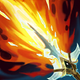

起手裝備
 增幅典籍
增幅典籍提高一技與木靈強化普攻的前期壓力。

Bard · 短 CD 暈眩／金身控場型遊走輔助
一技盡量讓第一個目標後方還有英雄、牆或小兵，才能打出暈眩。二技補包提前放在後排撤退路線。大絕優先用來凍住敵方後排、切斷增援或保塔，不要在隊友已經交爆發時把敵人全部金身。
本站當時評級理由：巴德在 ARAM 有更快的木靈蒐集節奏與不錯的持續消耗，6.3d 遊戲模式調整讓承傷降到 90%、治療提高到 120%，生存與補血都更舒服；但大絕一旦放錯會同時救到敵人，因此操作判斷決定上限。
6.3d 遊戲模式調整：木靈生成間隔 30→15 秒、承傷 100%→90%、治療 100%→120%。7.2a/7.2b 的額外巴德數值列於 AAA ARAM，未標註同步標準 ARAM，因此不套用。
提高一技與木靈強化普攻的前期壓力。

技能後強化普攻與木靈能一起打出很高短爆發。
提供法強與爆發，適合暈眩後快速壓低脆皮。

中後期直接放大技能與木靈傷害。

敵方魔抗成形後維持法穿。
深入找角度或大絕後被集火時提供保命。

補魔力與法術輸出，適合持續消耗。

需要更高法穿與爆發時升級。
一技、強化普攻與木靈很容易完成三段爆發。

木靈強化普攻頻繁觸發，提升換血。

控制命中後補一段傷害，配合一技暈眩。

ARAM 擊殺參與高，容易堆出額外輸出。

90% 承傷配骨甲可提高找角度時的容錯。

補一技暈牆、大絕後追擊與逃生。

提高抓單爆發與重創。
1 技 > 2 技 > 3 技
主 1 提高核心暈眩與消耗，次 2 提高補包治療；三技在 ARAM 地形用途較情境，大絕能點就點。
一技優先找「英雄＋牆／第二目標」的暈眩角度，補包提前放在後排而不是打起來才放。
木靈成長後強化普攻威脅提高。大絕可先凍敵方後排，讓隊伍短時間形成多打少。
大絕寧可保守也不要救敵人。凍塔、切割後排、暫停刺客進場都比單純拿來開團更穩。
 女妖面紗
女妖面紗敵方遠距先手控制多時提高安全性。
 視界專注
視界專注需要更高遠距技能消耗時使用。
 帝王命令
帝王命令隊伍需要偏輔助型團隊傷害時改用。
獨立歷史資料：7.2b 分類評級。7.3a 僅有部分增幅公告欄位校正，英雄分類適配與出裝未因此全面重評；不套用到標準 ARAM。
看遊戲卡片下方分類 → 點相同分類 → 看左側 S+／S／A。
一技能暈眩與大絕金身都能改變團戰節奏，控制增幅價值很高。
木靈會強化普攻，巫妖與木靈連動讓普攻型增幅有穩定收益。
一技能抓人、二技能補包與大絕切割都需要技能循環。
巴德需要頻繁換角與調整一技能牆暈位置，跑速能提高機動。
大絕雙放、技能普攻循環與保命類單卡都能提高操作上限。
一技能接木靈普攻能快速觸發額外傷害，補足爆發。
v80.17.0 ARAM A 最終批：標準 ARAM 採 6.3d 的 90% 承傷／120% 治療；7.2a、7.2b AAA ARAM 專屬增益不誤套。｜v93 7.2d 標準 ARAM 全量校正：已複核 Tier、標準 ARAM 模式修正、7.2c／7.2d 英雄與道具、現行符文名稱及雪球戰車；無額外異動者沿用已驗證配置。